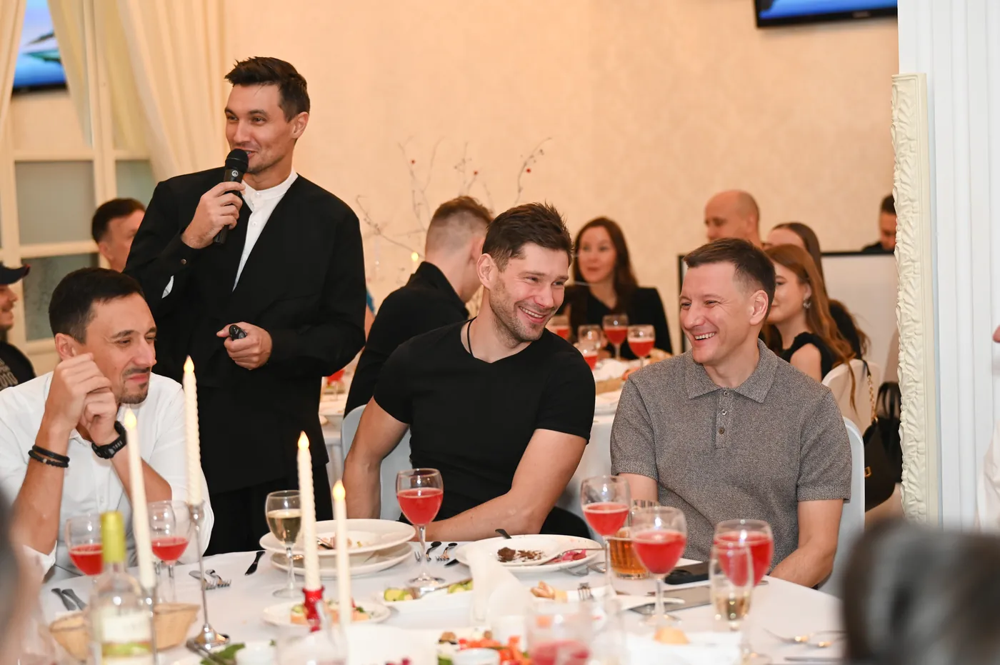
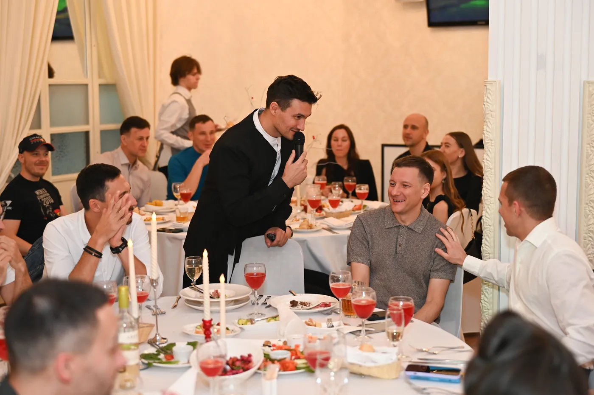
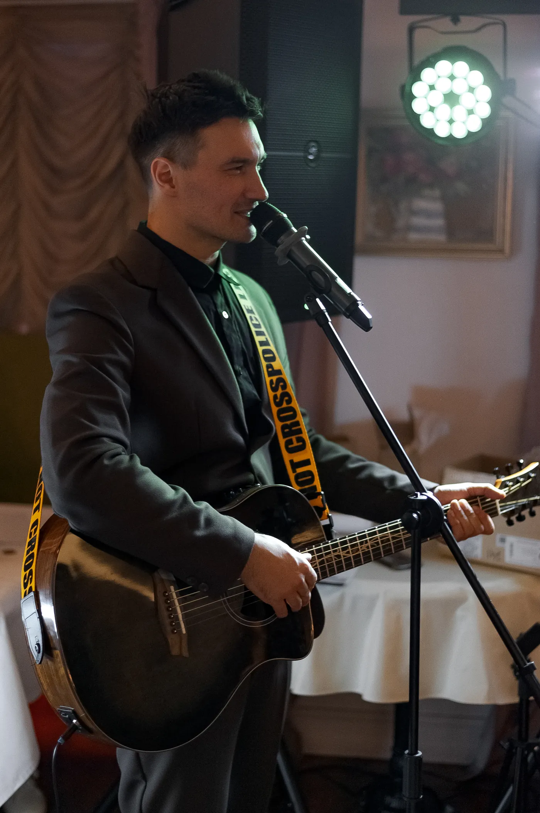

История пары превращается в песню
История молодожёнов, превращённая в персональный музыкально-комедийный номер.
Екатеринбург и выезд в другие города
Собираю программу вокруг конкретных людей: их историй, характера компании и того, что происходит в зале.

Живые фрагменты
Сначала — живые фрагменты. Здесь видно, как музыка, юмор и импровизация работают с реальными людьми.
История молодожёнов, превращённая в персональный музыкально-комедийный номер.
Живой фоновый сет во время сбора гостей — музыка создаёт атмосферу ещё до начала программы.
Музыка, контакт с людьми и настоящая реакция гостей.
Разделы сайта
У каждого события — своя атмосфера, задачи и способ подготовки.
Программа вокруг команды, компании и реальных историй коллег.
Открыть разделИстория пары, музыка и бережное вовлечение близких людей.
Открыть разделПраздник вокруг конкретного человека, его характера, истории и гостей.
Открыть разделВокал, гитара, клавиши, музыкальный welcome и импровизация из общения с залом.
Открыть разделПодход
Материал собирается из истории пары, компании, именинника и гостей, а не берётся из универсального сценария.
Вокал, гитара, клавиши и песни становятся частью вечера, а не отдельным номером между конкурсами.
Подхватываю то, что происходит в зале, не заставляя людей играть чужие роли и не превращая гостя в объект шутки.
Живые моменты
Настоящие реакции, живое участие и моменты, которые невозможно полностью запланировать заранее.

.webp)


Музыкальные форматы
Играю на клавишах и гитаре, пою, создаю песни из историй гостей и использую музыку как способ общения с залом.
Смотреть музыкальные форматы
Отзывы

невеста / камерная свадьба
Спасибо большое за наш праздник! Для нас был очень важен личный подход, и всё было услышано: от музыки и оформления слайдов до контакта с гостями.
Камерная свадьба

невеста
Спасибо огромное за то, что сделали нашу свадьбу незабываемой. С первых минут разговора было понятно: вот он, наш ведущий.
Свадьба

организатор / команда мероприятия
Юра Пинаев — человек, который много часов удерживает внимание зала профессионально, качественно и с юмором.
Командное мероприятие
Прямой контакт
Напишите дату, город, формат и примерное количество гостей. Я отвечу по занятости и предложу, с чего можно начать подготовку.